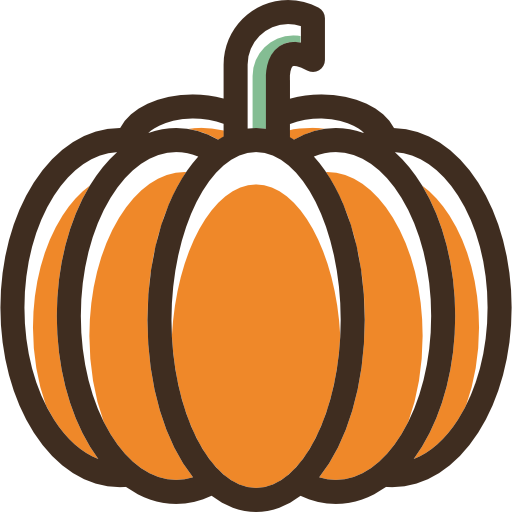

About me
Łabędzie znane są ze swojego niekonwencjonalnego sposobu odchodzenia na zawsze.
W chwili, gdy na horyzoncie zaczyna zarysowywać się ich koniec, znajdują największy głaz jaki zmieści im się w dziobie i połykają go.
Spokojnie i powoli opadają na dno zostawiając znany im świat na rzecz tego podwodnego.
Pumpkin: Flaticon.com
Events
Signal Processing
Łabędzie znane są ze swojego niekonwencjonalnego sposobu odchodzenia na zawsze. Spokojnie i powoli opadają na dno zostawiając znany im świat na rzecz tego podwodnego.
Braille Alphabet
Łabędzie znane są ze swojego niekonwencjonalnego sposobu odchodzenia na zawsze. W chwili, gdy na horyzoncie zaczyna zarysowywać się ich koniec, znajdują największy głaz jaki zmieści im się w dziobie i połykają go. Spokojnie i powoli opadają na dno zostawiając znany im świat na rzecz tego podwodnego.
Skills
Jesień – jedna z czterech podstawowych pór roku w przyrodzie, w strefie klimatu umiarkowanego. Jesień to czas zmian w przyrodzie. W świecie zwierząt jest to okres gromadzenia zapasów przed kolejną zimą lub przenoszenia się do cieplejszych stref klimatycznych. Zmieniające kolor liście przygotowują się do opadu, a najgrubsze części zielone roślin ulegają zdrewnieniu. Rośliny wieloletnie gromadzą substancje zapasowe w korzeniach, a jednoroczne doprowadzają do rozproszenia nasion i usychają. Wyjątkowe piękno jesiennej przyrody inspiruje do działań na rzecz jej ochrony.
Charakteryzuje się umiarkowanymi temperaturami powietrza z malejącą średnią dobową, oraz (w przypadku Polski) stosunkowo dużym w skali roku opadem atmosferycznym. Pomimo obniżającej się temperatury powietrza, krótszych dni oraz stosunkowo dużego opadu atmosferycznego, to niezwykle urokliwa pora roku, nie bez przyczyny w Polsce często nazywana „złotą". Zmieniające kolor liście drzew tworzą malowniczy krajobraz w odcieniach żółci i czerwieni, który zachwyca, wzrusza i zachęca do refleksji.
Drzewa umierają inaczej niż ludzie. Drzewa wyglądają tak, jak gdyby cieszyły się własną śmiercią. Wprawdzie potem będzie wiosna i one odkwitną znowu, ale ty wiesz, że nigdy nie można mieć pewności. No i skąd o tym mają wiedzieć drzewa? Dla nich na pewno każda jesień jest ostatnia.
Halina Poświatowska
Contact
Łabędzie znane są ze swojego niekonwencjonalnego sposobu odchodzenia na zawsze. W chwili, gdy na horyzoncie zaczyna zarysowywać się ich koniec, znajdują największy głaz jaki zmieści im się w dziobie i połykają go. Spokojnie i powoli opadają na dno zostawiając znany im świat na rzecz tego podwodnego.